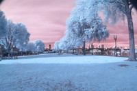
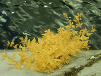

Analyze plant health.
Visualize photosynthesis.
Every pixel of your infragram media is converted to display the amount of infrared light reflected when used with an Infragram camera or filter kit. The default setting generates grey-scale NDVI, the Normalized Difference Vegetation Index, and has a built in colorize function to intensify individual pixel channels.
Drop your media here, connect through your computer above
or
explore with our ready-to-use images

Red filtered trees

Blue filtered plant

QUICK START
Default settings